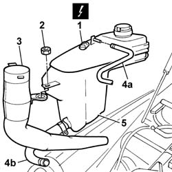
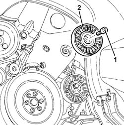

1092G20 Engine components single belt FIXED TENSIONER - R.R.
- Path
- Procedures > 10 ENGINE > 1092 engine component miscellaneous drives > 1092G single drive belt for various engine components > 1092G20 Engine components single belt FIXED TENSIONER - R.R.
- Kind
- repair procedure (removal / refitting; the operation number is the code)
- Applies to
- engines: 2.4 JTD 20V; all production periods
- Interactive page
- https://sloeber94.github.io/elrnDB-lThss/en/#/851136
Applies to: engines: 2.4 JTD 20V; all production periods
 Removing
Removing
 Refitting
Refitting- Position the vehicle on a lift.
- Open the boot and disconnect the negative battery terminal.
See in Op. 7055B54 PROTECTION/GUARD under engine - R.R.
See in Op. 4450B04 Right FRONT WHEEL (one) - R.R.
See in Op. 7055B42 FRONT WHEEL ARCH LINER (one), left or right - R.R.
See in Op. 7055B64 Engine compartment DUST SEAL in front wheel arch (one), left or right - R.R.
See in Op. 1016A10 SOUND-PROOFING COVER - R.R.
See in Op. 7040D50 ENGINE COMPARTMENT UPPER SOUND INSULATION SHIELD - R.R.
See in Op. 1048B44 RIGID air supply PIPE from heat exchanger to intake manifold - R.R.
See in Op. 1048A56 UPPER RESONATOR - R.R.
See in Op. 1092G10 Engine components single drive BELT - R.R.
1. Disconnect the electrical connection for the engine coolant level sensor.
 | Description | Connector |
|---|---|---|
1 | Engine coolant level sensor | K026 |
2. Undo the nut fixing the engine coolant reservoir and the screen washer fluid filler pipe.
3. Remove the windscreen washer fluid filler pipe.
- Position a suitable container for collecting the engine coolant.
4. Disconnect the flexible engine coolant recirculation pipes from the reservoir (4a) and the flexible pipe from the rigid pipe (4b).
5. Remove the engine coolant reservoir.

Applies to: engines: 2.4 JTD 20V; all production periods
1. Undo the retaining bolt.
2. Remove the auxiliary shaft drive belt fixed tensioner.

Applies to: engines: 2.4 JTD 20V; all production periods
Refitting
Removing- Fit the auxiliary shaft drive belt fixed tensioner.
- Tighten the fixing bolt to torque.
 | Value - daNm | Fastening | Component | Ø |
|---|---|---|---|---|
. | 2.5 | Bolt | SINGLE BELT FIXED TENSIONER VARIOUS | M8 |
- Connect the engine coolant pipes to the reservoir.
- Position the engine coolant reservoir in the special housing together with the screen washer fluid filler pipe.
- Tighten the engine coolant reservoir fixing nut.
- Connect the electrical connection for the engine coolant level sensor.
| Description | Connector |
|---|---|---|
. | Engine coolant level sensor | K026 |
See in Op. 1092G10 Engine components single drive BELT - R.R.
See in Op. 1048A56 UPPER RESONATOR - R.R.
See in Op. 1048B44 RIGID air supply PIPE from heat exchanger to intake manifold - R.R.
See in Op. 7040D50 ENGINE COMPARTMENT UPPER SOUND INSULATION SHIELD - R.R.
See in Op. 1016A10 SOUND-PROOFING COVER - R.R.
See in Op. 7055B64 Engine compartment DUST SEAL in front wheel arch (one), left or right - R.R.
See in Op. 7055B42 FRONT WHEEL ARCH LINER (one), left or right - R.R.
See in Op. 7055B54 PROTECTION/GUARD under engine - R.R.
See in Op. 4450B04 Right FRONT WHEEL (one) - R.R.
- Top up the engine coolant, following the instructions in the description:
See in Op. 0010T21 ENGINE COOLANT - Check density and top up if necessary
- Connect the negative battery terminal.
- Remove the vehicle from the lift.
Topics linked from this page (10)
- 0010T21 ENGINE COOLANT - Check density and top up if necessary
- 1016A10 SOUND-PROOFING COVER - R.R.
- 1048A56 UPPER RESONATOR - R.R.
- 1048B44 RIGID air supply PIPE from heat exchanger to intake manifold - R.R.
- 1092G10 Engine components single drive BELT - R.R.
- 4450B04 Right FRONT WHEEL (one) - R.R.
- 7040D50 ENGINE COMPARTMENT UPPER SOUND INSULATION SHIELD - R.R.
- 7055B42 FRONT WHEEL ARCH LINER (one), left or right - R.R.
- 7055B54 PROTECTION/GUARD under engine - R.R.
- 7055B64 Engine compartment DUST SEAL in front wheel arch (one), left or right - R.R.